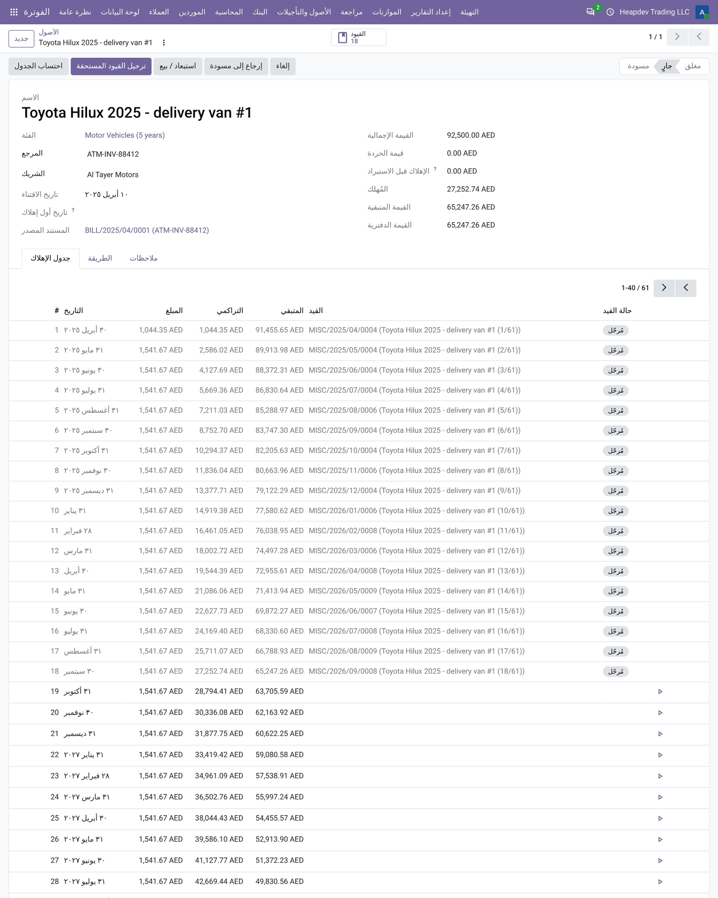

FIXED ASSETS · DEPRECIATION · DEFERRED REVENUE / EXPENSE
Assets & Deferrals Management
Fixed assets, depreciation and deferred revenue / expenses, posted automatically.
إدارة الأصول والتأجيلات
الأصول الثابتة والإهلاك والإيرادات والمصروفات المؤجلة بترحيل تلقائي.
Automatic
Assets created from vendor bills, depreciation posted by a scheduled action.
Flexible methods
Straight line or declining balance, prorata temporis, any period length, salvage value.
Full lifecycle
Board, entries, disposal or sale with gain / loss, and a depreciation schedule report.
What it does
ماذا يفعل التطبيق
Assets & Deferrals Management adds asset accounting to Odoo Community. Define categories with accounts, journal and method, link them to accounts so that posting a bill creates the asset, and let the scheduled action post depreciation every month. The same engine recognises deferred revenue (annual contracts, subscriptions) and spreads prepaid expenses (rent, insurance, licences). Dispose or sell assets with automatic gain / loss entries and review everything in the depreciation schedule report.
يضيف تطبيق إدارة الأصول والتأجيلات محاسبة الأصول إلى نسخة المجتمع. عرّف فئات بالحسابات ودفتر اليومية والطريقة، واربطها بالحسابات بحيث يؤدي ترحيل الفاتورة إلى إنشاء الأصل، ودع الإجراء المجدول يرحّل الإهلاك كل شهر. يعترف المحرك نفسه بالإيرادات المؤجلة (العقود السنوية والاشتراكات) ويوزع المصروفات المدفوعة مقدماً (الإيجار والتأمين والتراخيص). استبعد الأصول أو بعها مع قيود ربح أو خسارة تلقائية وراجع كل شيء في تقرير جدول الإهلاك.
Highlights
أبرز الميزات
| ✓Fixed assets | الأصول الثابتة |
| ✓Linear and declining balance | القسط الثابت والمتناقص |
| ✓Prorata temporis | التناسب الزمني |
| ✓Categories | الفئات |
| ✓Created from bills and invoices | الإنشاء من الفواتير |
| ✓Automatic posting | الترحيل التلقائي |
| ✓Deferred revenue and expenses | الإيرادات والمصروفات المؤجلة |
| ✓Dispose or sell | الاستبعاد أو البيع |
| ✓Depreciation schedule report | تقرير جدول الإهلاك |
How to use
طريقة الاستخدام
1STEP 1 · CONFIGURE
Create categories under Accounting > Configuration > Asset & Deferral Categories and link them on accounts.
أنشئ الفئات من المحاسبة > الإعدادات واربطها بالحسابات.
2STEP 2 · REGISTER
Post a vendor bill on the asset account or create the asset manually and confirm it.
رحّل فاتورة مورد على حساب الأصل أو أنشئ الأصل يدوياً وأكّده.
3STEP 3 · RUN
Depreciation posts automatically; dispose or sell from the asset and check the schedule report.
يُرحّل الإهلاك تلقائياً؛ استبعد أو بع من الأصل وراجع تقرير الجدول.
📷 Want to see it? Open the Screenshots tab above for 7 real screenshots.
افتح تبويب لقطات الشاشة في الأعلى لمشاهدة 7 لقطة حقيقية.
Features in detail
الميزات بالتفصيل
Fixed assets
Register assets with acquisition date, gross value, salvage value and depreciation already booked before go-live. Confirm to compute the depreciation board.
الأصول الثابتة
سجّل الأصول بتاريخ الاقتناء والقيمة الإجمالية وقيمة الخردة والإهلاك المسجل قبل بدء التشغيل، ثم أكّد لاحتساب جدول الإهلاك.
Linear and declining balance
Straight line or declining balance with a configurable factor (2.0 = double declining) that switches to linear when it gives more, monthly or any period length.
القسط الثابت والمتناقص
القسط الثابت أو المتناقص بمعامل قابل للتهيئة (2.0 = متناقص مضاعف) يتحول إلى الثابت عندما يعطي قيمة أكبر، شهرياً أو بأي طول فترة.
Prorata temporis
The first period is computed on the number of days from the acquisition date; an optional first depreciation date overrides the period end.
التناسب الزمني
تُحتسب الفترة الأولى حسب عدد الأيام من تاريخ الاقتناء، ويمكن تحديد تاريخ أول إهلاك اختيارياً.
Categories
Asset, deferred revenue and deferred expense categories hold the accounts, journal, method, number of periods and automation settings.
الفئات
فئات الأصول والإيرادات المؤجلة والمصروفات المؤجلة تحتوي على الحسابات ودفتر اليومية والطريقة وعدد الفترات وإعدادات الأتمتة.
Created from bills and invoices
Link an account to a category: posting a vendor bill (or a customer invoice for deferred revenue) on that account creates and optionally confirms the asset.
الإنشاء من الفواتير
اربط حساباً بفئة: ترحيل فاتورة مورد (أو فاتورة عميل للإيراد المؤجل) على هذا الحساب ينشئ الأصل ويؤكده اختيارياً.
Automatic posting
A scheduled action posts every due depreciation and deferral entry; you can also post due entries manually or create a single entry from the board.
الترحيل التلقائي
إجراء مجدول يرحّل كل قيود الإهلاك والتأجيل المستحقة، ويمكن أيضاً ترحيلها يدوياً أو إنشاء قيد واحد من الجدول.
Deferred revenue and expenses
Recognise annual contracts and subscriptions month by month, and spread prepaid rent, insurance or licences over the months they cover.
الإيرادات والمصروفات المؤجلة
اعترف بالعقود والاشتراكات السنوية شهراً بشهر، ووزّع الإيجار والتأمين والتراخيص المدفوعة مقدماً على الأشهر التي تغطيها.
Dispose or sell
A wizard posts due depreciation, removes gross value and accumulated depreciation and books the gain or loss, with sale proceeds when sold.
الاستبعاد أو البيع
معالج يرحّل الإهلاك المستحق ويزيل القيمة الإجمالية ومجمع الإهلاك ويسجل الربح أو الخسارة مع متحصلات البيع عند البيع.
Depreciation schedule report
Opening value, additions, depreciation, disposals and closing book value per asset and category for any period, on screen, PDF and XLSX.
تقرير جدول الإهلاك
القيمة الافتتاحية والإضافات والإهلاك والاستبعادات والقيمة الدفترية الختامية لكل أصل وفئة لأي فترة، على الشاشة وPDF وXLSX.
Screenshots
لقطات الشاشة
Real screenshots from a demo company with the UAE chart of accounts.
لقطات حقيقية من شركة تجريبية بدليل حسابات الإمارات.
1Fixed assets list with book value and status
قائمة الأصول الثابتة مع القيمة الدفترية والحالة

2Asset form with the depreciation board and posted entries
نموذج الأصل مع جدول الإهلاك والقيود المرحّلة

3Asset, deferred revenue and deferred expense categories
فئات الأصول والإيرادات والمصروفات المؤجلة

4Deferred revenue recognised month by month
الإيرادات المؤجلة المعترف بها شهرياً

5Depreciation Schedule report
تقرير جدول الإهلاك

6Dispose or sell an asset with gain / loss
استبعاد أو بيع أصل مع الربح أو الخسارة

7Arabic interface: asset form
الواجهة العربية: نموذج الأصل

Frequently asked questions
الأسئلة الشائعة
Is it really free?
Yes. This app is free and licensed LGPL-3.
هل هو مجاني فعلاً؟
نعم، هذا التطبيق مجاني ومرخص LGPL-3.
Does it replace Odoo Enterprise accounting?
It covers the most used Enterprise accounting reports and tools for Community users. It does not include bank synchronisation, OCR or consolidation.
هل يغني عن محاسبة إنتربرايز؟
يغطي أكثر تقارير وأدوات محاسبة إنتربرايز استخداماً لمستخدمي المجتمع، ولا يشمل مزامنة البنوك أو التعرف الضوئي أو التوحيد.
Does it change my existing entries?
No. Reports read the posted journal items; assets, PDC and recurring entries create normal journal entries you can review.
هل يغير قيودي الحالية؟
لا. التقارير تقرأ بنود اليومية المرحّلة، والأصول والشيكات والقيود المتكررة تنشئ قيوداً عادية يمكن مراجعتها.
Which languages are included?
English and a complete Arabic translation; PDFs are printed in English and Arabic side by side.
ما اللغات المضمنة؟
الإنجليزية وترجمة عربية كاملة، وتُطبع ملفات PDF بالإنجليزية والعربية جنباً إلى جنب.
Is it multi-company?
Yes, every report and record follows the current company.
هل يدعم الشركات المتعددة؟
نعم، كل تقرير وسجل يتبع الشركة الحالية.
Requirements
المتطلبات
Depends only on account and mail. Works on Community and Enterprise databases; no extra Python packages.
يعتمد فقط على تطبيقي المحاسبة والمراسلات. يعمل على قواعد بيانات المجتمع وإنتربرايز دون حزم بايثون إضافية.
Support | الدعم
Free app by Adil Akbar. For questions, customisation or implementation support contact adilak389@gmail.com.
تطبيق مجاني من عادل أكبر. للاستفسارات أو التخصيص أو دعم التنفيذ تواصل عبر البريد adilak389@gmail.com.